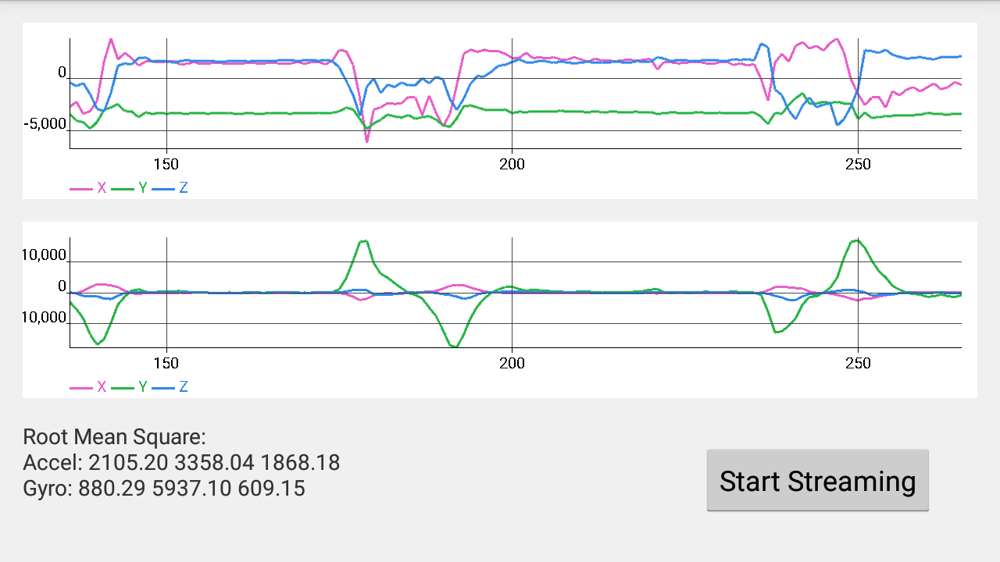
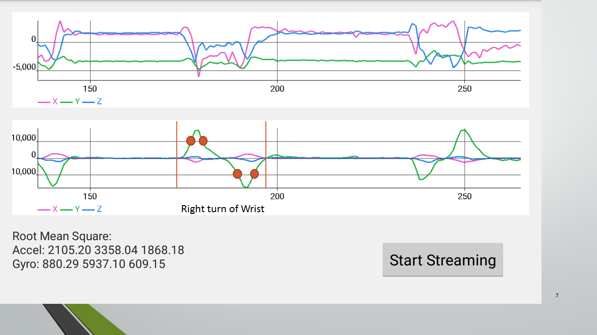
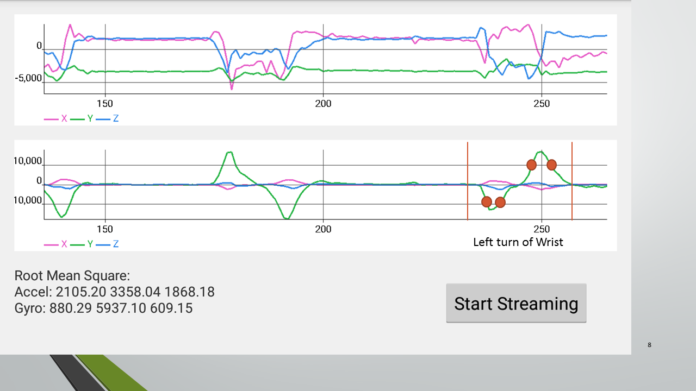
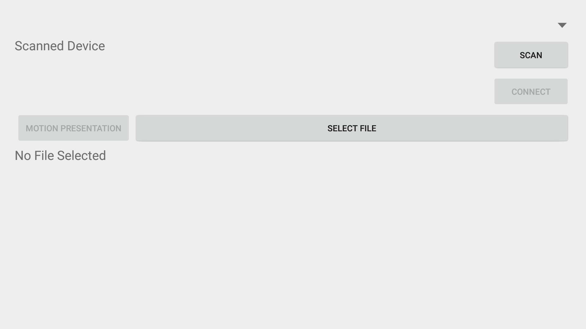

MotionPresenter is an appcessary which
Glance device is a health-monitoring device with a 3-axis accelerometer and a 3-axis gyroscope. This app makes use of the data from gyroscope to detect wrist movement.
The following screenshot are some data captured and characteristic of data catured
 From the previous part, there are some characteristic of the movement of wrist. In order to capture those characteristics and turn them into commands, some code are being try out.
Below is some variable defined in the app.
private boolean step1R = false;
private boolean step2R = false;
private boolean step3R = false;
private boolean step1L = false;
private boolean step2L = false;
private boolean step3L = false;
private boolean checkLeft(short incoming) {
boolean result = false;
if(incoming < -10000) {
step1L = true;
}
if(incoming < -10000 && step1L) {
Log.d(TAG, "step1L pass");
step2L = true;
}
if(incoming > 10000 && step2L) {
Log.d(TAG, "step2L pass");
step3L = true;
}
if(incoming > 10000 && step3L) {
Log.d(TAG, "step3L pass");
//Log.d(TAG, "Right");
step1L = false;
step2L = false;
step3L = false;
step1LTime = 0;
step2LTime = 0;
step3LTime = 0;
return true;
}
return result;
}
private boolean checkRight(short incoming) {
boolean result = false;
if(incoming > 10000) {
step1R = true;
}
if(incoming > 10000 && step1R) {
Log.d(TAG, "step1R pass");
step2R = true;
}
if(incoming < -10000 && step2R) {
Log.d(TAG, "step2R pass");
step3R = true;
}
if(incoming < -10000 && step3R) {
Log.d(TAG, "step3R pass");
//Log.d(TAG, "Right");
step1R = false;
step2R = false;
step3R = false;
step1RTime = 0;
step2RTime = 0;
step3RTime = 0;
return true;
}
return result;
}
Code above can detect the movement of wrist, but there are many false-positive detection such as turning the wrist back to original position will still detect a right turn of wrist. These false-positive cases will make the presentation hard to control.
After the instability of the previous code, by observating the data in detail, there is a major parameter which has not been taken into consideration in the first trial - time and period. After including the time constraint, the detection is more precise than before.
In order to capture the time of each data, some more variables are defined.
private long step1RTime = 0;
private long step2RTime = 0;
private long step3RTime = 0;
private long step1LTime = 0;
private long step2LTime = 0;
private long step3LTime = 0;
private static final long TIMEOUT = 30; //ms
private boolean checkLeft(short incoming) {
boolean result = false;
Date date = new Date();
long temp = date.getTime();
if(incoming < -10000) {
step1L = true;
step1LTime = date.getTime();
}
if(incoming < -10000 && step1L && (temp - step1LTime) < TIMEOUT*3) {
Log.d(TAG, "step1L pass");
step2L = true;
step2LTime = date.getTime();
}
if(incoming > 10000 && step2L && (temp - step2LTime) < TIMEOUT*10) {
Log.d(TAG, "step2L pass");
step3L = true;
step3LTime = date.getTime();
}
if(incoming > 10000 && step3L && (temp - step3LTime) < TIMEOUT*3 && (temp - step1LTime) < TIMEOUT*20) {
Log.d(TAG, "step3L pass");
//Log.d(TAG, "Right");
step1L = false;
step2L = false;
step3L = false;
step1LTime = 0;
step2LTime = 0;
step3LTime = 0;
return true;
}
return result;
}
private boolean checkRight(short incoming) {
boolean result = false;
Date date = new Date();
long temp = date.getTime();
if(incoming > 10000) {
step1R = true;
step1RTime = date.getTime();
}
if(incoming > 10000 && step1R && (temp - step1RTime) < TIMEOUT*3) {
Log.d(TAG, "step1R pass");
step2R = true;
step2RTime = date.getTime();
}
if(incoming < -10000 && step2R && (temp - step2RTime) < TIMEOUT*10) {
Log.d(TAG, "step2R pass");
step3R = true;
step3RTime = date.getTime();
}
if(incoming < -10000 && step3R && (temp - step3RTime) < TIMEOUT*3 && (temp - step1RTime) < TIMEOUT*20) {
Log.d(TAG, "step3R pass");
//Log.d(TAG, "Right");
step1R = false;
step2R = false;
step3R = false;
step1RTime = 0;
step2RTime = 0;
step3RTime = 0;
return true;
}
return result;
}
After turning motion data into commands, the control flow of the app is easy to handle.
First check if there are any action (Left or Right turn) is detected before. If Yes, do nothing. If No, Check if the present value satisfy the left turn. If Yes, change the image to previous image. If No, do nothing. Check if the present value satisfy the right turn. If Yes, change the image to next image. If No, do nothing.
After processing the motion data, another part for this app is importing files from the phone. The basic concept is to send an Intent to the OS for choosing files. Then the Intent will return the path of the files for later processing.
For more details, please refer to this site (Chinese only).
Simple is beauty. This app doesn't decorate much.
In order to utilize the whole screen, the app has been put in immersive mode. Users can call the notification drawer out by swiping the screen from top to bottom.
This appcessary turns a health-monitoring device into a wireless motion presenter with following features
This appcessary actually is proof of concept that smartphone can replace ordinary notebook computers to do presentation. The following are missions incompleted.